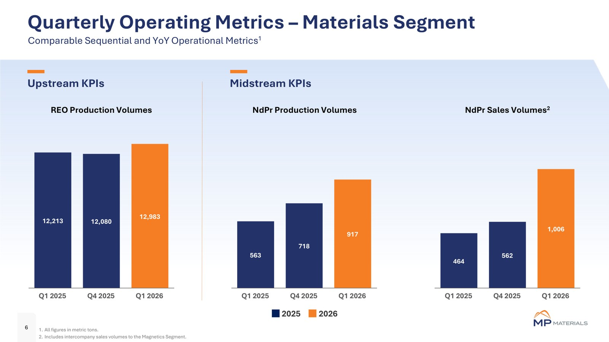
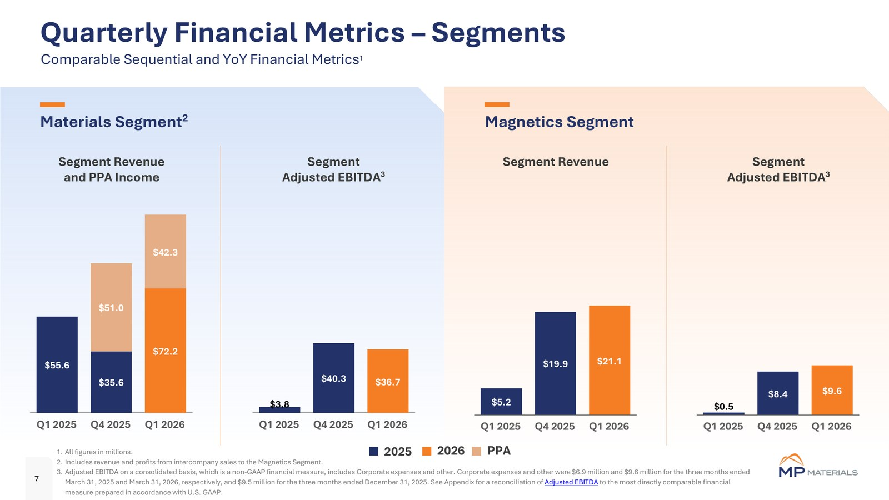
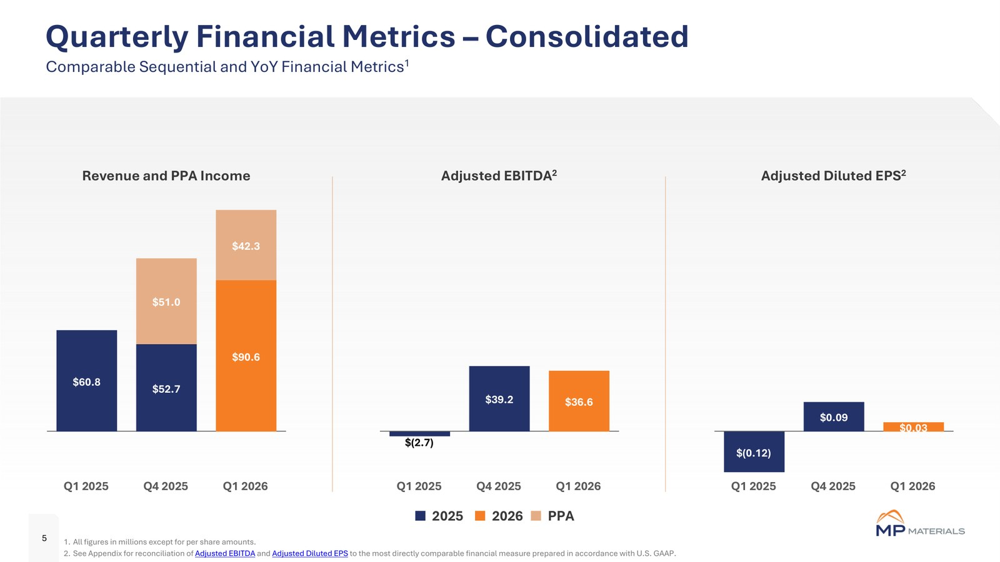

MP MATERIALS 🇺🇸 (NYSE:MP)
Model biznesowy w obrazach

Wolumeny produkcji: REO (upstream) oraz produkcja i sprzedaż NdPr (midstream) w ujęciu kwartalnym. Źródło: MP Materials, prezentacja wyników Q1 2026 (maj 2026).

Ekonomika dwóch segmentów zintegrowanego modelu: Materials (wydobycie i przetwórstwo) oraz Magnetics (magnesy) - przychody i skorygowana EBITDA. Źródło: MP Materials, prezentacja wyników Q1 2026 (maj 2026).

Skonsolidowane wyniki kwartalne: przychody z dopłatą PPA, skorygowana EBITDA i skorygowany zysk na akcję. Źródło: MP Materials, prezentacja wyników Q1 2026 (maj 2026).
W kontekście: Wydobycie (upstream)
Czym jest spółka. MP Materials kontroluje Mountain Pass w Kalifornii - jedyną kopalnię i instalację przetwórczą ziem rzadkich działającą na skalę przemysłową w Ameryce Północnej. Spółka określa się jako największy producent materiałów ziem rzadkich na półkuli zachodniej. To pozycjonowanie pochodzi bezpośrednio od MP, ale sam status Mountain Pass jako jedynego regionalnego kompleksu tej skali znajduje potwierdzenie w raporcie rocznym.
W części upstream Mountain Pass wydobywa rudę i produkuje koncentrat zawierający pierwiastki ziem rzadkich. Złoże zawiera około 1,9 mln ton REO przy cutoff 2,4%, a średnia zawartość rudy w całym okresie eksploatacji wynosi około 6,0% TREO. To wysoka koncentracja materiału użytecznego, dzięki której na jednostkę odzyskanego REO trzeba przemieścić i przerobić relatywnie mniej skały niż w złożach o niższej klasie.
Kopalnia odkrywkowa ma około 2 500 stóp ze wschodu na zachód, 3 000 stóp z północy na południe i maksymalnie 600 stóp głębokości. W 2025 r. MP wyprodukowało rekordowe 50 692 t REO w koncentracie, o 12% więcej rok do roku. Spółka podaje również, że Mountain Pass dostarcza ponad 10% światowej zawartości ziem rzadkich. Dla porównania globalny rynek tlenków ziem rzadkich liczył w 2025 r. około 252 000 t REO, choć udział Mountain Pass i wielkość rynku nie są idealnie porównywalne, ponieważ pierwsza miara dotyczy zawartości REE, a druga tlenków.
Znaczenie biznesowe: Mountain Pass daje MP własne źródło surowca o wysokiej klasie złoża, dzięki czemu rozwój rafinacji i magnesów nie zaczyna się od uzależnienia od zewnętrznej kopalni.
Dla inwestora: kluczowe jest rozdzielenie skali geologicznej od skali sprzedaży - duże zasoby i rekordowa produkcja koncentratu budują bazę operacyjną, ale wartość ekonomiczna zależy także od odzysku, separacji, cen produktów i zdolności przesuwania materiału dalej w łańcuchu.
W kontekście: Separacja, rafinacja i metalurgia
Mountain Pass przestaje być wyłącznie kopalnią eksportującą koncentrat. W części midstream MP separuje mieszaninę REE na produkty o wyższej czystości, przede wszystkim NdPr, a następnie przetwarza tlenek na metal potrzebny do wytwarzania magnesów. W 2025 r. spółka wyprodukowała rekordowe 2 599 t tlenku NdPr, czyli o 101% więcej rok do roku, i sprzedała 1 994 t, o 75% więcej rok do roku.
Zmiana miksu przychodów pokazuje przechodzenie od koncentratu do produktów przetworzonych. Przychód z koncentratu spadł w 2025 r. do 41,992 mln USD ze 144,363 mln USD w 2024 r., natomiast przychód z tlenku i metalu NdPr wzrósł do 115,131 mln USD z 57,762 mln USD. Zerwanie sprzedaży do Chin w lipcu 2025 r. sprowadziło udział Chin w przychodach MP do 0%, lecz wymusiło szybsze zagospodarowanie koncentratu i produktów separacji poza dotychczasowym kanałem.
Kolejnym etapem ma być rozszerzenie separacji o HREE. Kontrakt rządowy o wartości 35 mln USD finansuje projekt instalacji do ich przetwarzania w Mountain Pass. Wypłaty są zależne od kamieni milowych, a ujawnione kwoty wynosiły 2,8 mln USD w 2023 r., 0 USD w 2024 r. i 24,2 mln USD w 2025 r. Osobno MP otrzymało od Departamentu Wojny USA pożyczkę niezabezpieczoną w wysokości 150 mln USD, z terminem zapadalności 1 sierpnia 2037 r., na rozbudowę obejmującą rafinację tlenku samaru i HREE.
Znaczenie biznesowe: własna separacja i metalurgia pozwalają MP zatrzymywać więcej etapów przetwarzania w firmie oraz kierować materiał do własnej produkcji magnesów zamiast sprzedawać głównie koncentrat.
Dla inwestora: wzrost wolumenu NdPr i zmiana struktury przychodów są dowodem postępu technicznego, ale różnica między produkcją 2 599 t a sprzedażą 1 994 t przypomina, że uruchomienie mocy nie jest tym samym co pełna monetyzacja produktu.
W kontekście: Łańcuch magnesów trwałych NdFeB i SmCo
MP rozszerzyło działalność z surowców i tlenków na magnesy NdFeB. Zakład Independence w Fort Worth rozpoczął komercyjną produkcję w grudniu 2025 r. i ma docelowo wytwarzać 3 000 t magnesów rocznie. Drugi kampus, 10X w Northlake, ma wejść w rozruch od 2028 r. i osiągnąć około 7 000 t rocznie. Po ukończeniu obu projektów łączna planowana zdolność produkcyjna MP w USA ma wynosić 10 000 t magnesów rocznie.
Independence ma długoterminową umowę z General Motors zawartą w kwietniu 2022 r. GM jest klientem założycielskim dla magnesów i produktów prekursorowych. W 2025 r. dopisania do przychodów odroczonych związanych z GM wyniosły 50 mln USD, a całkowite przychody odroczone dotyczące tego klienta wynosiły 83,1 mln USD. Ujawnione dane nie określają jednak zakontraktowanego wolumenu magnesów ani pełnej wartości umowy - NIE UJAWNIONE.
Dla 10X odbiorcą domyślnym jest Departament Wojny USA. Wiążąca umowa offtake przewiduje sprzedaż resortowi 100% produkcji zakładu, przy czym MP może skierować do 100% produkcji do stron trzecich za zgodą Departamentu Wojny. Rząd gwarantuje ponadto minimum 140 mln USD rocznej EBITDA po osiągnięciu zdefiniowanego kamienia milowego produkcyjnego.
Partnerstwo z Apple obejmuje magnesy o 100% zawartości materiału z recyklingu, pochodzącego ze źródeł poprodukcyjnych i zużytych produktów. Dostawy mają rozpocząć się w 2027 r., a wolumen jest NIE UJAWNIONY. Wartość partnerstwa ogłoszono jako 500 mln USD, natomiast raport roczny wskazuje 200 mln USD przyszłych przedpłat, 32 mln USD dopisań do przychodów odroczonych w 2025 r. oraz 72 mln USD długoterminowych przychodów odroczonych.
Zaangażowanie MP w magnesy SmCo nie zostało w dostarczonych dowodach potwierdzone - skala produkcji, projekty i przychody z tej technologii są NIE UJAWNIONE.
Znaczenie biznesowe: Independence i 10X mają przekształcić MP z dostawcy surowca w producenta komponentu końcowego, którego odbiorcami są przemysł motoryzacyjny, elektronika użytkowa i państwo.
Dla inwestora: moce 3 000 t, 7 000 t i 10 000 t są wartościami docelowymi, a nie raportowaną produkcją; faktyczny wolumen magnesów w 2025 r. pozostaje NIE UJAWNIONY, więc analizę skali trzeba opierać na tempie rozruchu i rozpoznawaniu przychodów.
W kontekście: Dywersyfikacja i budowa łańcucha poza Chinami
Strategia MP polega na odtworzeniu poza Chinami kolejnych ogniw: Mountain Pass dostarcza rudę i koncentrat, instalacje separacyjne wytwarzają tlenki, część metalurgiczna przygotowuje metal, a Independence i 10X mają produkować magnesy. Po zaprzestaniu sprzedaży do Chin w lipcu 2025 r. udział tego rynku w przychodach spadł do 0%. To wyraźnie ogranicza zależność od chińskiego odbiorcy, ale nie usuwa chińskiej dominacji cenowej i technologicznej w globalnym sektorze.
W 2025 r. Chiny odpowiadały za około 70% światowego wydobycia REE oraz 85-90% globalnych mocy separacji i rafinacji. Chińskie rezerwy szacowano na 44 mln t ekwiwalentu REO, czyli około 34% światowych rezerw wynoszących 130 mln t. Raport MP stwierdza wprost, że produkcja REE i magnesów pozostaje zdominowana przez chińskich konkurentów, wspieranych przez rezerwy, przetwórstwo i pionowo zintegrowaną infrastrukturę.
Dywersyfikacja obejmuje także Japonię. Sumitomo Corporation zostało wyłącznym dystrybutorem tlenku NdPr MP dla klientów japońskich. Jest to wiążąca umowa dystrybucyjna, ale jej wartość i wolumen są NIE UJAWNIONE.
W listopadzie 2025 r. MP, Departament Wojny USA i saudyjski Maaden ogłosiły projekt wspólnej rafinerii. Docelowy łączny udział MP i Departamentu Wojny wynosi 49%, a udział Maaden ma być nie mniejszy niż 51%. W tym kontekście MP zadeklarowało ponad 1 mld USD inwestycji w rozbudowę działalności w USA oraz ponad 1 000 nowych miejsc pracy w amerykańskiej produkcji. Wkład USA do saudyjskiego przedsięwzięcia ma być w pełni finansowany przez Departament Wojny w formule non-recourse. Projekt pozostaje zapowiedzianym przedsięwzięciem, a harmonogram, moc rafinerii i ostateczna wartość inwestycji są NIE UJAWNIONE.
Znaczenie biznesowe: MP buduje zachodni kanał od kopalni do magnesu, ale skala chińskiego wydobycia i przetwórstwa oznacza, że dywersyfikacja odbiorców nie daje automatycznie niezależności od światowych cen i podaży z Chin.
Dla inwestora: spadek chińskich przychodów do 0% zmienia profil geopolityczny MP, lecz przenosi ciężar analizy na zdolność pozyskania odbiorców zachodnich, wykonanie nowych instalacji i trwałość wsparcia publicznego.
W kontekście: Mapa kluczowych graczy w łańcuchu
MP Materials łączy Mountain Pass, separację NdPr, metalurgię oraz uruchamianą produkcję magnesów. Raport spółki opisuje Mountain Pass jako jedyny kompleks wydobywczo-przetwórczy o skali przemysłowej w Ameryce Północnej.
Chińscy producenci pozostają dominującą siłą w wydobyciu, separacji i magnesach NdFeB. Ich przewaga wynika ze skali rezerw, rozbudowanych mocy przetwórczych i pełnej integracji pionowej. Dane pomocnicze wskazują na około 70% wydobycia i 85-90% mocy rafinacji w 2025 r.
Lynas Rare Earths jest opisowym odpowiednikiem wskazanego w raporcie MP drugiego dużego operatora zintegrowanego między Australią a Malezją, choć sam fragment raportu nie wymienia nazwy. Lynas osiągnął w roku finansowym 2025 przychód 556,51 mln USD, wzrost o 20,12% z 463,29 mln USD, oraz zysk netto 7,99 mln USD, niższy o 90,55%. Jego bieżąca kapitalizacja wynosiła 14,89 mld USD. Dla MP odpowiednie wartości wynosiły 224,441 mln USD przychodu i stratę netto 85,9 mln USD; proste porównanie nie uwzględnia różnic w miksie produktów, okresach raportowych i mechanizmach wsparcia.
Departament Wojny USA występuje jednocześnie jako inwestor, kredytodawca, gwarant ceny NdPr, odbiorca magnesów 10X i gwarant minimalnej EBITDA. General Motors i Apple są odbiorcami rozwijanego segmentu magnesów, Sumitomo otwiera kanał dystrybucji NdPr w Japonii, a Maaden ma być partnerem rafineryjnym w Arabii Saudyjskiej. JPMorgan Chase i Goldman Sachs zadeklarowały 1 mld USD finansowania dłużnego dla 10X, zaś władze stanowe i lokalne przygotowały dla projektu pakiet zachęt o wartości 200 mln USD.
Znaczenie biznesowe: MP znajduje się w centrum układu przemysłowo-państwowego, w którym kolejne etapy łańcucha są budowane wspólnie z odbiorcami, instytucjami finansowymi i rządem.
Dla inwestora: mapa partnerów pokazuje ograniczenie ryzyka popytowego i finansowego, ale także koncentrację zależności - powodzenie ekspansji jest powiązane z decyzjami kilku dużych kontrahentów i jednego kluczowego partnera publicznego.
Ekspozycja na REE w liczbach
Przychody i segmenty. Skonsolidowany przychód MP w 2025 r. wyniósł 224,441 mln USD, wobec 203,855 mln USD w 2024 r., co oznacza wzrost o 10,1% rok do roku. Segment Materials wykazał 160,369 mln USD przychodu przed eliminacjami, a segment Magnetics 66,861 mln USD przychodu zewnętrznego, wobec 0 USD w 2024 r. Ponieważ podstawa segmentowa obejmuje wartości przed eliminacjami, porównywalny udział Materials w skonsolidowanym przychodzie jest NIE UJAWNIONY.
W ujawnionych kategoriach produktowych 115,131 mln USD pochodziło z tlenku i metalu NdPr, 41,992 mln USD z koncentratu ziem rzadkich, a 66,861 mln USD z segmentu Magnetics.
pie title Ujawnione przychody MP według kategorii w 2025 r. (mln USD) "Tlenek i metal NdPr": 115.131 "Koncentrat ziem rzadkich": 41.992 "Magnetics": 66.861
Ujawnione kategorie przychodów w 2025 r.; wykres nie zastępuje formalnego uzgodnienia segmentów i eliminacji. Źródło: MP Materials 10-K 2025.
Produkcja i moce. MP wyprodukowało 50 692 t REO w koncentracie, o 12% więcej rok do roku, oraz 2 599 t tlenku NdPr, o 101% więcej. Sprzedaż tlenku NdPr wyniosła 1 994 t, rosnąc o 75%. Średnia zrealizowana cena koncentratu wyniosła 4 707 USD/t, wobec 4 414 USD/t w 2024 r. Docelowe moce magnesów to 3 000 t rocznie w Independence i 7 000 t w 10X, łącznie 10 000 t rocznie. Rzeczywista produkcja magnesów w 2025 r. jest NIE UJAWNIONA.
Wynik i bilans. Strata netto w 2025 r. wyniosła 85,9 mln USD, wobec 65,4 mln USD straty w 2024 r., a rozwodniony EPS wyniósł -0,50 USD, wobec -0,57 USD. Skorygowana EBITDA poprawiła się do 11,4 mln USD z -50,2 mln USD. W samym czwartym kwartale 2025 r. spółka wykazała 9,4 mln USD zysku netto i 39,2 mln USD skorygowanej EBITDA.
Na 31 grudnia 2025 r. gotówka i inwestycje krótkoterminowe wynosiły 1,83 mld USD, a aktywa razem 3,86 mld USD, wobec odpowiednio 850,9 mln USD i 2,33 mld USD rok wcześniej. Nakłady capex na rzeczowe aktywa trwałe wyniosły 172,4 mln USD, wobec 186,4 mln USD w 2024 r. Przychód z umowy ochrony cenowej z Departamentem Wojny, obowiązującej od 1 października 2025 r., wyniósł 51 mln USD i został rozpoznany w czwartym kwartale.
Znaczenie biznesowe: wyniki pokazują równoczesne skalowanie NdPr i wejście w magnesy, ale także duże wydatki inwestycyjne oraz istotny wpływ umowy ochrony cenowej na raportowaną rentowność.
Dla inwestora: dodatnia skorygowana EBITDA nie oznacza dodatniego wyniku netto, a poprawę należy analizować razem z 51 mln USD przychodu z mechanizmu rządowego i z kosztami rozruchu nowych zakładów.
Kluczowe umowy - co znaczą
Partnerstwo z Departamentem Wojny USA. W lipcu 2025 r. resort objął akcje uprzywilejowane serii A za 400 mln USD. Instrument nalicza skumulowaną dywidendę PIK w wysokości 7,0% rocznie, kapitalizowaną kwartalnie. Akcje mogą zostać zamienione na 13 320 013 akcji zwykłych po 30,03 USD, a dziesięcioletni warrant obejmuje do 11 201 659 akcji po tej samej cenie. Łącznie instrumenty odpowiadały początkowo 15% wyemitowanych akcji na bazie konwersji i wykonania. Jest to finansowanie kapitałowe z potencjalnym rozwodnieniem, a nie przychód operacyjny.
Ochrona ceny NdPr. Wiążąca, dziesięcioletnia umowa ustala cenę minimalną produktów NdPr na 110 USD/kg. Jeśli kwartalna średnia ważona wolumenem cena referencyjna jest niższa, Departament Wojny dopłaca różnicę. Mechanizm zaczął generować przychód 1 października 2025 r. i przyniósł 51 mln USD w 2025 r. Nie zabezpiecza całego portfela produktów MP, a koncentrat pozostaje narażony na ceny rynkowe.
10X. Wiążąca umowa offtake obejmuje domyślnie 100% produkcji magnesów 10X oraz gwarancję co najmniej 140 mln USD rocznej EBITDA po osiągnięciu kamienia milowego produkcyjnego. Finansowanie obejmuje zobowiązanie dłużne JPMorgan Chase i Goldman Sachs w wysokości 1 mld USD oraz stanowo-lokalny pakiet zachęt o wartości 200 mln USD. Harmonogram wykorzystania finansowania i szczegółowe warunki uruchomienia są NIE UJAWNIONE.
Rozbudowa HREE. MP otrzymało 150 mln USD niezabezpieczonej pożyczki z okresem 12 lat, zapadającej 1 sierpnia 2037 r., oraz kontrakt o wartości 35 mln USD na instalację HREE w Mountain Pass. To finansowanie infrastruktury i kamieni milowych, a nie gwarancja komercyjnego wolumenu sprzedaży.
Apple. Ogłoszona wartość partnerstwa wynosi 500 mln USD, a raport roczny przewiduje 200 mln USD przyszłych przedpłat w ramach długoterminowej umowy dostaw. Dostawy magnesów o 100% zawartości materiałów z recyklingu mają rozpocząć się w 2027 r. Liczba magnesów i wolumen w tonach są NIE UJAWNIONE. Nagłówkowa wartość partnerstwa nie powinna być automatycznie utożsamiana z przychodem ani z wartością przedpłat.
General Motors i Sumitomo. Umowa z GM z kwietnia 2022 r. jest długoterminową umową dostaw magnesów i prekursorów z Independence, lecz całkowita wartość i wolumen są NIE UJAWNIONE. Sumitomo ma wiążącą wyłączność na dystrybucję tlenku NdPr MP do japońskich klientów, również bez ujawnionej wartości i wolumenu.
Maaden. Ogłoszony projekt przewiduje docelowo 49% udziału MP i Departamentu Wojny oraz nie mniej niż 51% dla Maaden. Ostateczna moc, wartość rafinerii i harmonogram są NIE UJAWNIONE, dlatego jest to projekt rozwojowy o mniejszej pewności niż działająca umowa ochrony cenowej lub podpisany offtake 10X.
Umowy typu take-or-pay oraz odrębne MOU o skwantyfikowanych wolumenach nie zostały w materiale dowodowym ujawnione - NIE UJAWNIONE.
Znaczenie biznesowe: pakiet umów łączy kapitał, dług, ochronę ceny, gwarancję wyniku, odbiór produkcji i przedpłaty, ograniczając różne ryzyka na kolejnych etapach budowy łańcucha.
Dla inwestora: poszczególnych kwot nie należy sumować jak jednolitego backlogu - 400 mln USD kapitału, 1 mld USD długu, 200 mln USD zachęt i 500 mln USD partnerstwa Apple reprezentują odmienne prawa, zobowiązania i momenty ujęcia księgowego.
Pozycja rynkowa i udziały
Mountain Pass dostarcza ponad 10% światowej zawartości ziem rzadkich, a MP określa się jako największy producent materiałów REE na półkuli zachodniej. W 2020 r. spółka odpowiadała za około 15% zawartości ziem rzadkich zużywanej globalnie, ale jest to historyczna miara z komunikatu opublikowanego przy zawieraniu umowy z GM i nie należy jej traktować jako aktualnego udziału.
Globalny rynek tlenków ziem rzadkich wynosił w 2025 r. około 252 000 t REO. Udział MP w tym konkretnie zdefiniowanym rynku jest NIE UJAWNIONY. Produkcja 50 692 t REO w koncentracie nie powinna być mechanicznie dzielona przez wielkość rynku tlenków, ponieważ koncentrat i gotowe tlenki są produktami na innych etapach przetwarzania.
Poza Chinami raport MP wskazuje tylko jednego innego dużego zintegrowanego operatora działającego między Australią a Malezją. W Ameryce Północnej Mountain Pass pozostaje jedynym kompleksem wydobycia i przetwarzania REE tej skali. Ranking MP w światowej produkcji magnesów NdFeB jest NIE UJAWNIONY, a planowane moce 10 000 t rocznie nie są jeszcze tożsame z udziałem rynkowym.
Znaczenie biznesowe: MP ma znaczącą pozycję w zachodnim wydobyciu, ale dopiero buduje porównywalną pozycję w separacji, metalu i magnesach.
Dla inwestora: najbardziej wiarygodne miary pozycji to fizyczna produkcja i status Mountain Pass; historyczne udziały oraz docelowe moce magnesów wymagają wyraźnego oznaczenia daty, produktu i etapu rozruchu.
Mechanika konkurencji - na osiach
Klasa złoża. Mountain Pass ma średnio 6,0% TREO w całym okresie eksploatacji. Wyższa zawartość rudy ogranicza ilość materiału, którą trzeba wydobyć i przerobić na jednostkę REO, lecz pełny koszt pozostaje zależny także od odzysku, energii, odczynników, gospodarki odpadami i sprawności instalacji. Koszt jednostkowy MP jest NIE UJAWNIONY.
Integracja pionowa. MP kontroluje górnictwo, separację, metalurgię i produkcję magnesów w USA. Ta konfiguracja ogranicza liczbę zewnętrznych dostawców na krytycznej ścieżce, lecz oznacza równoczesne finansowanie i uruchamianie kilku kapitałochłonnych etapów. Independence ma dojść do 3 000 t, a 10X do 7 000 t magnesów rocznie.
Zależność od Chin. MP zakończyło sprzedaż do Chin w lipcu 2025 r., sprowadzając chińskie przychody do 0%. Konkurenci chińscy nadal dominują jednak w produkcji REE i NdFeB, a ich udział w światowym wydobyciu i mocy rafinacji wynosił odpowiednio około 70% i 85-90% w 2025 r. MP ograniczyło więc zależność od chińskiego klienta, ale pozostaje wystawione na ceny kształtowane przez rynek zdominowany przez Chiny.
Ochrona przed cyklem cenowym. Cena minimalna 110 USD/kg NdPr i gwarancja co najmniej 140 mln USD rocznej EBITDA 10X tworzą osłonę niedostępną producentom bez analogicznego kontraktu rządowego. Ochrona jest jednak produktowo i kontraktowo ograniczona. Średnia cena koncentratu nadal zmieniła się z 4 414 USD/t w 2024 r. do 4 707 USD/t w 2025 r.
Skala konkurenta spoza Chin. Lynas osiągnął 556,51 mln USD przychodu i 7,99 mln USD zysku netto w roku finansowym 2025, wobec 224,441 mln USD przychodu i 85,9 mln USD straty netto MP. Lynas ma większą obecną skalę przychodową w materiałach, podczas gdy MP przeznacza kapitał na amerykański downstream i korzysta z rozbudowanego wsparcia państwowego. Porównywalne koszty produkcji, ceny koszyka produktów i wolumen magnesów są NIE UJAWNIONE.
Wsparcie państwa. MP korzysta z 400 mln USD inwestycji w akcje uprzywilejowane, 150 mln USD pożyczki, kontraktu HREE o wartości 35 mln USD, mechanizmu floor, gwarancji EBITDA 10X i należności z ulgi 45X wynoszącej 42 mln USD na koniec 2025 r. Wsparcie poprawia zdolność finansowania ekspansji, ale zwiększa znaczenie ciągłości polityki przemysłowej i spełnienia warunków kontraktowych.
Znaczenie biznesowe: MP konkuruje połączeniem jakości złoża, integracji i wsparcia publicznego, podczas gdy chińscy gracze odpowiadają skalą, istniejącą infrastrukturą i dominacją w przetwórstwie.
Dla inwestora: przewagi MP nie są jednorodne - złoże jest aktywem operacyjnym, moce magnesów pozostają docelowe, a floor i gwarancja EBITDA są prawami kontraktowymi zależnymi od obowiązywania umów.
Koncentracja odbiorców i ryzyka
Koncentracja klientów. W 2025 r. Klient A odpowiadał za 30% całkowitego przychodu, Klient B za 23%, a Klient C za 31%. Łącznie trzej odbiorcy generowali 84% przychodów. Klienci A i B byli związani z segmentem Materials, a Klient C głównie z Magnetics. Ich tożsamości są NIE UJAWNIONE.
Struktura jest bardziej zdywersyfikowana niż wcześniej, ale nadal skoncentrowana. W 2024 r. Klient B odpowiadał za 78%, a Klient A za 20%, czyli dwaj odbiorcy generowali 98% przychodu. W 2023 r. sam Klient B odpowiadał za 96%. Historycznie zdecydowana większość koncentratu była sprzedawana jednemu głównemu dystrybutorowi w Chinach. Po zakończeniu chińskiej sprzedaży w lipcu 2025 r. geografia zmieniła się, lecz zależność od niewielkiej grupy odbiorców pozostała.
Wąska grupa rafinerii. MP przyznaje, że popyt na część produktów jest ograniczony do relatywnie małej liczby rafinerii. Utrata pojedynczego kontrahenta może więc oznaczać nie tylko spadek ceny, ale również trudność w szybkim przekierowaniu całego wolumenu do innego odbiorcy.
Ryzyko rozruchu. Independence rozpoczął komercyjną produkcję dopiero w grudniu 2025 r., a 10X ma wchodzić w rozruch od 2028 r. Przejście od docelowych 3 000 t do łącznych 10 000 t magnesów rocznie wymaga skutecznego uruchomienia nowego kampusu, kwalifikacji produktu i synchronizacji z odbiorcami. Faktyczny harmonogram osiągnięcia pełnych mocy jest NIE UJAWNIONY.
Ryzyko cenowe. Floor 110 USD/kg obejmuje produkty NdPr zgodnie z umową z Departamentem Wojny, ale nie eliminuje zmienności wszystkich przychodów. Koncentrat pozostaje wystawiony na rynek, co widać w zmianie średniej ceny z 4 414 USD/t do 4 707 USD/t. Mechanizm floor zmniejsza ekspozycję na spadek benchmarku NdPr, lecz jednocześnie zwiększa udział płatności kontraktowych w wyniku.
Ryzyko polityczne i kontraktowe. Gwarancja co najmniej 140 mln USD rocznej EBITDA 10X, odbiór 100% produkcji i dziesięcioletnia ochrona ceny są zależne od utrzymania umów z Departamentem Wojny. Zmiana polityki lub spór o spełnienie kamieni milowych może wpływać na przepływy, nawet gdy fizyczne instalacje pozostają sprawne.
Ryzyko ulg podatkowych. Należność z tytułu 45X wynosiła 42 mln USD na 31 grudnia 2025 r., wobec 19,8 mln USD rok wcześniej. Stawka dla kwalifikowanych minerałów krytycznych wynosi 10% kosztów kwalifikowanych, a wiążący wybór wypłaty bezpośredniej obowiązuje do 2027 r. Zmiana zasad po 2027 r. mogłaby zwiększyć ekonomiczny koszt produkcji.
Ryzyko finansowania i rozwodnienia. Akcje uprzywilejowane mają dywidendę PIK 7,0%, a ich konwersja wraz z wykonaniem warrantu odpowiadała początkowo 15% akcji na bazie pełnej konwersji i wykonania. Kapitalizacja dywidendy zwiększa wartość instrumentu w czasie, a konwersja może zwiększyć liczbę akcji zwykłych.
Ryzyko rachunkowe. Spółka wykazała 11,4 mln USD skorygowanej EBITDA, ale jednocześnie 85,9 mln USD straty netto. Dodatkowo 51 mln USD przychodu pochodziło z ochrony cenowej uruchomionej w czwartym kwartale. Oceniając poprawę wyników, trzeba oddzielić wykonanie operacyjne od wpływu płatności rządowych i korekt stosowanych w skorygowanej EBITDA.
Znaczenie biznesowe: MP zmniejszyło historyczną zależność od pojedynczego chińskiego odbiorcy, lecz nowy model nadal opiera się na kilku klientach, kontraktach rządowych i terminowym rozruchu kosztownych instalacji.
Dla inwestora: dywersyfikację geograficzną należy analizować osobno od koncentracji kontrahentów - udział Chin spadł do 0%, ale trzech klientów nadal generowało 84% przychodu.
Słowniczek
- upstream - początkowa część łańcucha obejmująca złoże, wydobycie i produkcję koncentratu.
- REE - pierwiastki ziem rzadkich, grupa metali wykorzystywanych między innymi w magnesach trwałych.
- REO - ekwiwalent tlenków ziem rzadkich, standardowa miara zawartości i produkcji REE.
- cutoff - minimalna zawartość surowca przyjmowana przy szacowaniu zasobów złoża.
- TREO - całkowita zawartość tlenków ziem rzadkich w rudzie.
- midstream - etap separacji, rafinacji i przetwarzania koncentratu w tlenki oraz metale.
- NdPr - neodym i prazeodym, kluczowe składniki wysokowydajnych magnesów trwałych.
- HREE - ciężkie pierwiastki ziem rzadkich, wydzielana grupa REE wymagająca wyspecjalizowanej separacji.
- NdFeB - magnes neodymowo-żelazowo-borowy o wysokiej sile magnetycznej.
- SmCo - magnes samarowo-kobaltowy, ceniony między innymi za odporność na wysoką temperaturę.
- offtake - umowa odbioru określonej części produkcji przez wskazanego kontrahenta.
- non-recourse - finansowanie, w którym wierzyciel dochodzi spłaty zasadniczo z aktywów i przepływów projektu, a nie z całego majątku sponsora.
- integracja pionowa - kontrolowanie kolejnych etapów łańcucha, od surowca do produktu końcowego.
- EPS - zysk lub strata netto przypadająca na akcję.
- EBITDA - wynik przed odsetkami, podatkami oraz amortyzacją; wersja skorygowana usuwa dodatkowo pozycje wskazane przez spółkę.
- capex - nakłady inwestycyjne na budowę lub zakup długoterminowych aktywów.
- PIK - dywidenda lub odsetki regulowane przez zwiększenie wartości instrumentu zamiast bieżącej wypłaty gotówkowej.
- warrant - prawo objęcia akcji po z góry ustalonej cenie i w określonym terminie.
- floor - kontraktowa cena minimalna, poniżej której druga strona dopłaca określoną różnicę.
- take-or-pay - umowa zobowiązująca odbiorcę do odebrania zakontraktowanego wolumenu albo zapłaty mimo braku odbioru.
- MOU - memorandum porozumienia, zwykle opisujące zamiar współpracy bez pełnego zestawu wiążących zobowiązań umowy handlowej.
- 45X - amerykańska ulga podatkowa dla kwalifikowanej produkcji komponentów i minerałów krytycznych.
Źródła
- MP Materials - raport roczny 10-K za 2025 r., profil, aktywa, strategia i ryzyka - https://www.sec.gov/Archives/edgar/data/1801368/000180136826000008/mp-20251231.htm
- MP Materials - Mountain Pass, zasoby, klasa złoża i udział w podaży - https://mpmaterials.com/materials/
- StockAnalysis - profil MP Materials, zatrudnienie i kapitalizacja - https://stockanalysis.com/stocks/MP/
- SEC XBRL - liczba akcji MP Materials - https://www.sec.gov/Archives/edgar/data/1801368/000180136826000008/R1.htm
- SEC XBRL - przychody produktowe i przychody odroczone - https://www.sec.gov/Archives/edgar/data/1801368/000180136826000008/R100.htm
- MP Materials - wyniki czwartego kwartału i całego 2025 r. - https://mpmaterials.com/news/mp-materials-reports-fourth-quarter-and-full-year-2025-results
- SEC XBRL - przychody segmentów Materials i Magnetics - https://www.sec.gov/Archives/edgar/data/1801368/000180136826000008/R124.htm
- SEC XBRL - uzgodnienie wyników segmentowych - https://www.sec.gov/Archives/edgar/data/1801368/000180136826000008/R126.htm
- SEC XBRL - akcje uprzywilejowane Departamentu Wojny - https://www.sec.gov/Archives/edgar/data/1801368/000180136826000008/R22.htm
- SEC XBRL - partnerstwo z Departamentem Wojny, floor, offtake, pożyczka i warranty - https://www.sec.gov/Archives/edgar/data/1801368/000180136826000008/R11.htm
- MP Materials - partnerstwo publiczno-prywatne i finansowanie 10X - https://mpmaterials.com/news/mp-materials-announces-transformational-public-private-partnership-with-the-department-of-defense-to-accelerate-u-s-rare-earth-magnet-independence
- SEC XBRL - projekt HREE i ulga 45X - https://www.sec.gov/Archives/edgar/data/1801368/000180136826000008/R25.htm
- MP Materials i Apple - partnerstwo dotyczące magnesów z recyklingu - https://mpmaterials.com/news/mp-materials-and-apple-announce-500-million-partnership-to-produce-recycled-rare-earth-magnets-in-the-united-states
- MP Materials i Sumitomo - dystrybucja NdPr w Japonii - https://mpmaterials.com/news/mp-materials-and-sumitomo-corporation-strengthen-rare-earth-supply-in-japan
- MP Materials, Departament Wojny i Maaden - plan wspólnej rafinerii - https://mpmaterials.com/news/mp-materials-and-the-u-s-department-of-war-partner-with-the-saudi-arabian-mining-company-maaden-to-develop-rare-earth-refinery-joint-venture
- MP Materials i General Motors - długoterminowa umowa dostaw - https://mpmaterials.com/news/general-motors-and-mp-materials-enter-long-term-supply-agreement-to-scale-rare-earth-magnet-sourcing-and-production-in-the-us
- SEC XBRL - koncentracja odbiorców - https://www.sec.gov/Archives/edgar/data/1801368/000180136826000008/R10.htm
- Wikipedia - pomocnicze dane o udziale Chin w wydobyciu, przetwarzaniu i rezerwach REE - https://en.wikipedia.org/wiki/Rare-earth_element
- StockAnalysis - wyniki i kapitalizacja Lynas Rare Earths - https://stockanalysis.com/quote/asx/LYC/